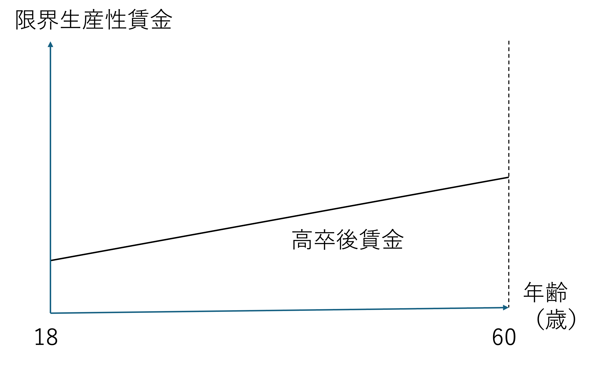
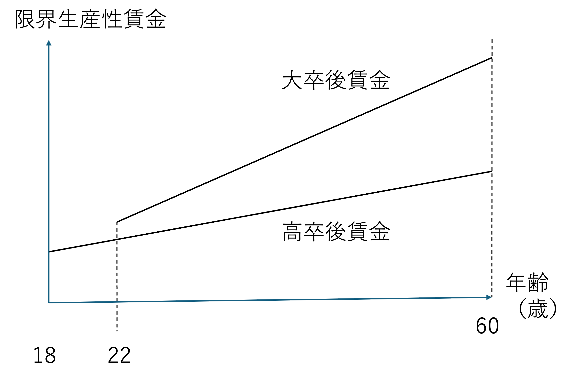
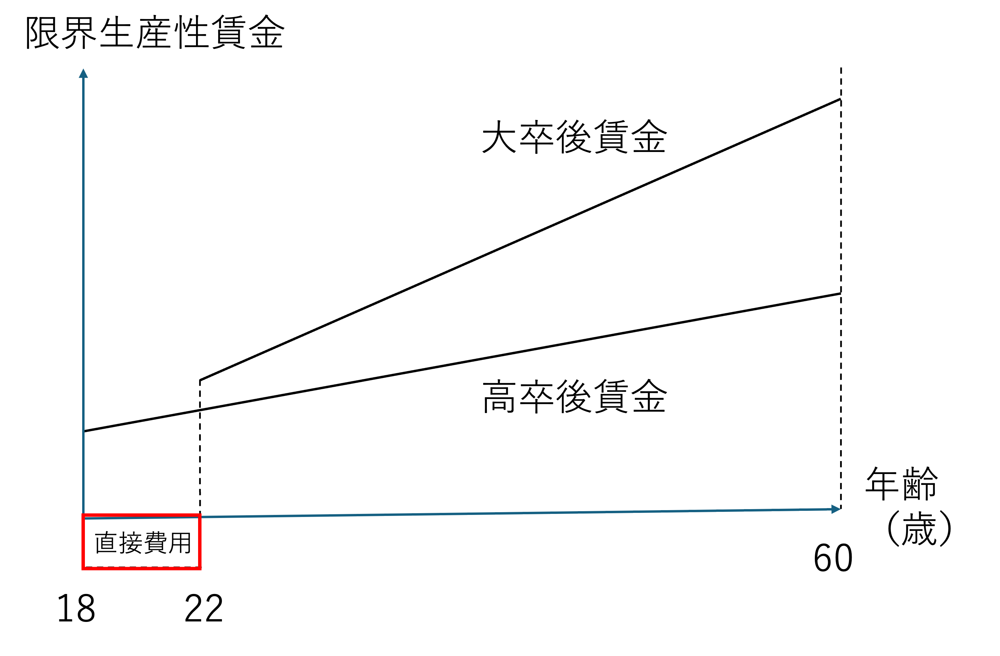
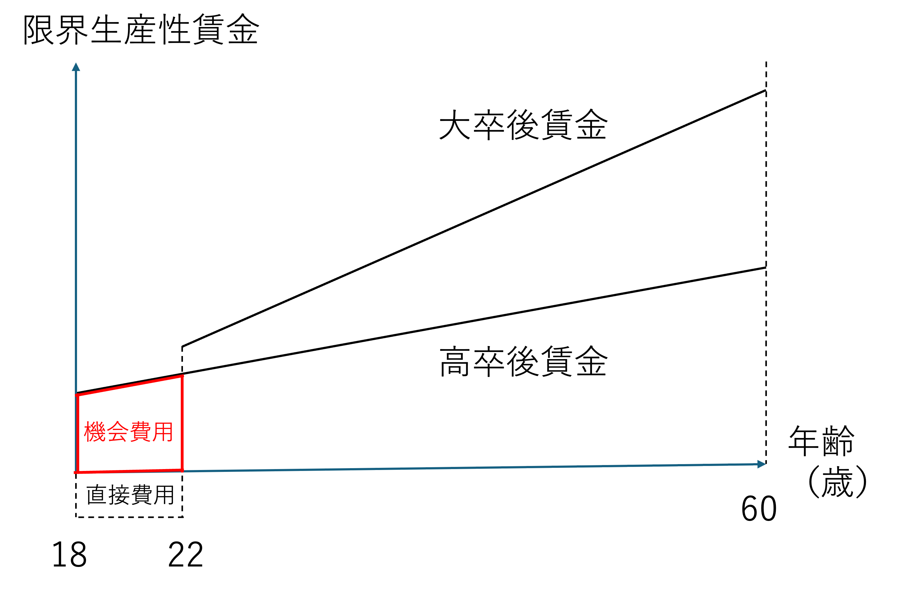
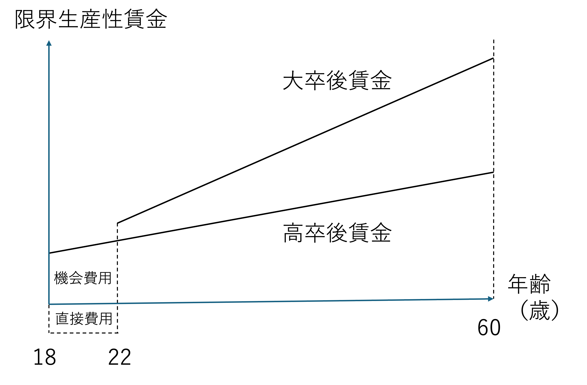
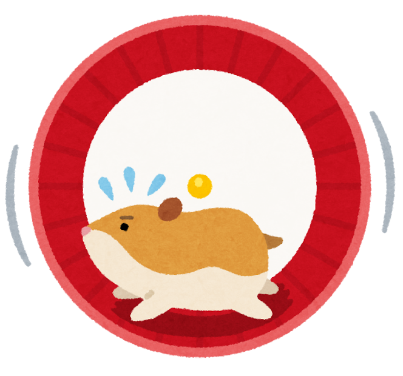

3 内部収益率
3.1 学習目標
- 人的資本理論をベースとして、教育投資の収益率の計測方法を理解する。
- 現在価値、大学進学の基本的な考え方を理解する。
- 内部収益率に関する実際の計算問題演習に取り組む。
3.2 大学進学の判断
教育経済学では、教育を需要するかどうか、人はその費用と便益を考慮して決定すると考えます。
これを大学進学の判断を例に考えてみましょう。
まず、大学に行かなかった場合の生涯賃金を以下のように単純に考えます。

人は18歳で働き始め、60歳で定年を迎えるまで、42年間働きます。また、経験を積むにつれて生産性が向上するため、賃金も年齢と共に上がります。
次に、大学に進学した場合の賃金を考えます。

大学卒業後、22歳で働き始め、60歳で定年を迎えるまで、38年間働きます。また、ここでは、大学で学んだことで高い生産性が得られ、初年度から高校卒業者よりも高い賃金が得られるとします。そしてさらに、経験を積むにつれて伸びる生産性についても、高校卒業者よりも大きいとします。
ブレスト：ここまでの話を聞いて、大学に進学した場合の費用と便益について、どのように計算したら良いか考えてみましょう。
個人ワーク（3分）
- ワークシートの裏に、大学進学の費用と便益の計算方法について、その考え方を書き、どのような場合には大学に進学し、どのような場合には進学しないか考えてください。
ペアワーク（3分）
- お互いの答えを共有し、違いを確認してください。
それでは、みんなで考えましょう。
費用：授業料、教材費
機会費用（放棄所得）
進学せずに働いていたら得られたはずの賃金便益：将来に渡り得られる賃金の上昇分（高卒と大卒の賃金差）
単純に、便益 − 費用 を考え、進学するかどうか判断する。
具体的に計算してみよう。
個人ワーク（5分）
以下の場合について、大学に進学すべきか、しない方が良いか、考えてください。
高卒の賃金：20万円/月
18歳から60歳まで42年間元気に働ける大卒の賃金：25万円/月
22歳から60歳まで38年間元気に働ける大学の学費：100万円/年
賃金はボーナスなし、昇給なしと仮定し、さらに時間による費用の割引率も考えない場合、大学に進学することは合理的であると考えられますか？
ペアワーク（5分）
- お互いの答えを共有
- 違いを議論
解答
高卒の生涯賃金
- 20万円×12か月×42年間＝10,080万円
大卒の生涯賃金
25万円/月×12か月×38年間－100万円×4年間＝11,000万円
ここから、機会費用（20万円×12か月×4年間=960万円）を引くと
10,040万円
大学に進学すると直接経費がかかる

大学に進学すると機会費用がかかる

大学進学の合理的判断
生涯賃金 − 直接費用 − 機会費用 が高校卒業卒の生涯賃金と比べて判断する。
（もちろん、金銭面が全てではない。）

3.3 収益率の計算方法
ここまでは基本的な考え方を理解するために、仮定を単純化して考えてきました。ここからは、もう少し現実的な仮定をおいていきます。
現在価値の考え方
経済学では、今現在のお金の価値と、将来のお金の価値は異なると考えます。
「今100万円を受け取るか、一年後に利子をつけて受け取るか。」どちらがいいですか？
仮に利子が5%だとすれば、一年後には105万円受け取れます。
ここで逆に、一年後に5%の利子が付いて100万円になっている金額を考えてみましょう。
一年後の100万円を 1.05 で割り95.23万円（100万円÷1.05）です。
つまり、一年後の100万円は現在の価値に直すと95.23万円（100万円÷1.05）となります。
大学に進学するために今必要な学費や機会費用が、将来得られる賃金プレミアムと見合うかを判断するには、すべての値を「現在価値」に換算して比較する必要があります。
複利の考え方
利子にもまた利子がつくことを「複利」と呼びます。
100万円を金利5%で2年間預ける場合
1年後：105万円
2年後：105万円×1.05 = 110.25万円
（1年目の利子5万円にも利子がつきます）
つまり、100万円 × 1.05 × 1.05 を計算している。
ちなみに、利子を元金に組み入れない場合を「単利」といいます。
正味現在価値法
将来得られる利益を現在価値に割り引いた合計から、投資費用の現在価値（Present Value Cost）を差し引いた値を正味現在価値（NPV：Net Present Value）といいます。この NPV がプラスであれば投資の合理性があると考えます。
以下は大学進学を判断する際の考え方です。
便益の現在価値
\[ \begin{aligned} PVB &= \frac{B_{22}}{(1+r)^4} + \frac{B_{23}}{(1+r)^5} + \frac{B_{24}}{(1+r)^6} + \dots + \frac{B_{60}}{(1+r)^{42}} \\[2.0em] &= \sum_{t=22}^{t=60} \frac{B_t}{(1+r)^{t-18}} \end{aligned} \]
費用の現在価値
\[ \begin{aligned} PVC &= C_{18} + \frac{C_{19}}{(1+r)} + \frac{C_{20}}{(1+r)^2} + \frac{C_{21}}{(1+r)^3} \\[2.0em] &= \sum_{t=18}^{t=21} \frac{C_t}{(1+r)^{t-18}} \end{aligned} \]
注）
\(C\) には直接費用と機会費用が含まれます。
\(B\) は大卒賃金と高卒賃金の差を表します。
教育のタイミングについて考えてみよう。
個人ワーク（5分）
教育は若い時に受けた方が良い（合理的である）と主張する人がいます。この人がそのように主張する理由を2つ以上考えてみましょう。
ペアワーク（3分）
- お互いの答えを共有
- 違いを議論
教育のタイミング
教育は若い時に受けた方が良い（合理的である）と主張される理由
受けた教育からの収益（return）を受け取る期間が長くなるため。
歳をとると次第に賃金も上がり、その賃金を諦めてまで教育を受けるための費用（機会費用）が増えてしまうため。
コメンテーターの意見は正しいか?
個人ワーク（5分）
「不況で大卒者の賃金が減ったから大学に行く合理性は減った」とテレビでコメントしている方がいました。この意見について賛成ですか？反対ですか？
ペアワーク（3分）
- お互いの答えを共有
- 違いを議論
大学教育の賃金プレミアム
必ずしも正しくないといえます。
- 大卒者の賃金が減れば、高卒者の賃金も同様に減っていると考えられ、必ずしも大卒と高卒の賃金格差（大卒プレミアム）がなくなったわけではない。
NPVによる変化予測
直接経費の増加
学費が上がればNPVは下がり、大学進学率は低下する。間接経費の増加
年齢が上がり機会費用（諦める賃金）が増えるとNPVは下がる。大卒賃金プレミアムの変化
社会の変化で大卒者の需要が高まり賃金差が開けば、進学率は上昇する。
3.4 内部収益率
投資の正味現在価値（NPV）がちょうどゼロになるような割引率のことを内部収益率（IRR：Internal Rate of Return）といいます。
つまり、便益 − 費用＝０が成り立つ \(r\) のことをいいます。
以下を満たす \(r\) が大学進学の内部収益率となります。
\[ \sum_{t=18}^{t=21} \frac{C_t}{(1+r)^{t-18}} = \sum_{t=22}^{t=60} \frac{B_t}{(1+r)^{t-18}} \]
内部収益率が高いほど大学進学の経済的合理性が高いといえます。
例えば、株式投資の収益率が、大学進学の内部収益率よりも高い場合、大学に進学するよりも株式に投資した方が良いと（合理的には）考えることもできます。
つまり、「大学という投資の“利回り”」を考え、「この利回りが市場金利より高いなら投資する（大学に進学する）」ということになります。
もちろん、大学進学の価値は金銭面だけではありませんが、、、。
現実とのズレ
ここまでは綺麗な仮定をおき、単純化した議論を進めてきましたが、もちろん、現実社会には様々なことが起こります。自分が説明したい現象をさらにモデルに組み込むような取り組みも行われます。
- リスク（就職失敗）
- 学力差
- 学部差
日本国内の分析結果
投資としての教育は高い効果が期待できると考えられています。
男子の高等教育収益率：6%から9%程度
女子の高等教育収益率：8%から9%程度
生涯賃金（60歳まで正社員を続けた場合）
男性：大卒 約2.9億円 / 高卒 約2.6億円
女性：大卒 約2.4億円 / 高卒 約1.9億円
関連動画（クリックすると音が出ます）
3.5 演習課題（宿題）
ハムスターの教育投資
ハムスターの平均寿命は４年間です。このハムスターが労働市場で働くと仮定して教育投資に関する演習を行います。

仮定
ハムスターの寿命は４年間と仮定します。
生まれてからの最初の１年間は基本的なことを学ぶ期間です。人間で言えば高校終了段階です。ここで、残り３年間をどのように過ごすか考えます。
ハムスターは回し車が得意なので、回し車に発電機をつけて発電し、それを売る（売電する）仕事に就くことができます。
1年目には25,000円稼ぐことができ、次の年から賃金は25,000円ずつ10万円まで増えます。
2年目：50,000円、3年目：75,000円、4年目：100,000円他方、一生（残りの3年）をカラカラ回し車を回しながら生きるのは嫌だと考えるハムスターには指導者になるキャリアも用意されています。２年間の回し車専門学校に通えば、回し車の指導者になることができます。
学費は初年度50,000円、2年目は教育実習代が含まれ75,000円支払う必要があります。それでも、回し車の指導者になれば、年間300,000円稼ぐことが見込まれています。賃金はこの後、増減しません。
現在の市場の利子率は8%と仮定します。
問題
- 【2点】
ハムスターに想定される2つのキャリアパス（回し車 or 指導者）について、それぞれの現在価値を求め、ハムスターにとっての合理的な選択はどちらか説明してください。
1年目（基礎教育期間）終了時点を基準として現在価値を計算してください。
なお、給料はその年の仕事が終わった時に一度にもらうものとし、学費も１年間の勉強が終わった時に一度に支払うこととします。（つまり、最初から１年間分の割引率を適用してください。）
- 【2点】
上記設定では、人生の1年目が終わった時点で選択をすることを想定していますが、生まれた瞬間にこの選択ができるとしたら、合理的な選択は変わりますか？（この場合でも、人生の1年目は基礎訓練期間であることは変わりません。）
割引期間の違いに注目して考えてください。
- 【2点】
- ハムスターの平均寿命は4年なので、仕事ができる期間は最大３年間として考えましたが、仮に、追加で１年間働くことができるとすれば、上記の合理的選択は変わりますか？
- 【2点】
仮に、指導者になる方が生涯賃金は多くなる場合があったとしても、必ずしも全てのハムスターは指導者にはなりません。
考えられる理由を2つ挙げてください。